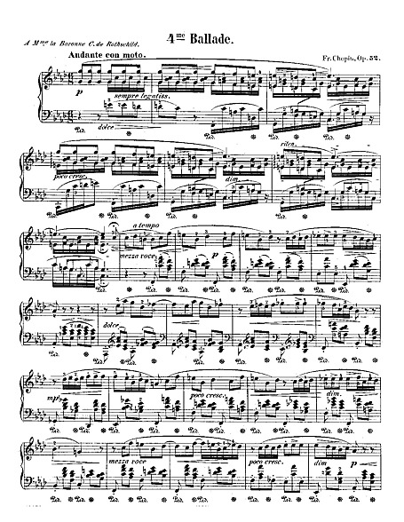
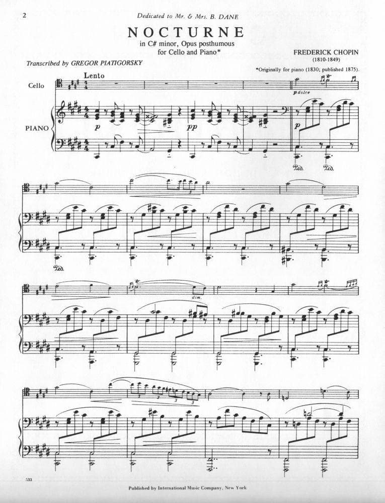
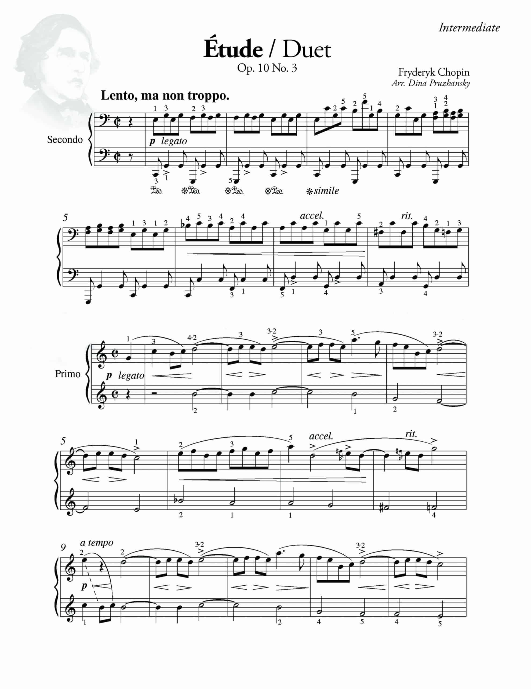
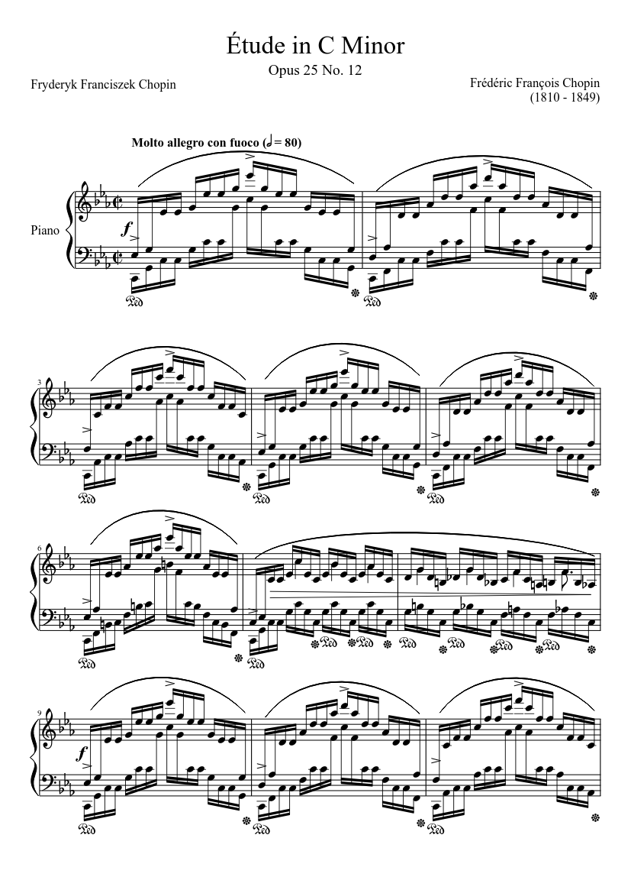

Music & Piano
The Score
Reimagined
Final Fantasy tributes · Classical · Original arrangements
The Passion
Piano as a Second Language
Music came first — before code, before engineering. Years at the piano shaped how I think about focus, repetition, and phrasing. It left me with Chopin études beside game soundtracks without skipping a beat: two languages for the same kind of longing.
Final Fantasy arrived at the right moment. Nobuo Uematsu's melodies didn't just accompany a story — they were the story. Notes that carried weight, melody that held memory. That's why Chopin and Uematsu sit naturally side by side in my repertoire.
The same discipline that makes a Chopin étude clean makes a production deployment reliable. Code and music share the same soul: pattern, expression, and the relentless pursuit of something beautiful.

Selected Performances
Each card embeds a reference performance from YouTube (via youtube-nocookie.com). Content and copyright belong to the respective uploaders.

CHOPIN
Ballade No. 1 in G Minor, Op. 23
Chopin's first ballade — dark, narrative, and fiercely Romantic.

CHOPIN
Ballade No. 4 in F Minor, Op. 52
The last ballade — contrapuntal brilliance and one of Chopin's most epic closing statements.

CHOPIN
Nocturne in C♯ Minor, KK IVa No. 16
The famous posthumous nocturne — brooding melody and restrained grief.
CHOPIN
Waltz in C♯ Minor, Op. 64 No. 2
Mazurka-flavoured melancholy framed as a waltz — restrained and unforgettable.

CHOPIN
Étude in E Major, Op. 10 No. 3 (“Tristesse”)
Bel canto lyricism disguised as study material — one of Chopin's most sung melodies.

CHOPIN
Étude in C Minor, Op. 25 No. 12 (“Ocean”)
Rolling arpeggio waves building to hurricane intensity — a technical summit of the Romantic era. The embedded recording is Lang Lang’s performance from his Chopin-focused album recording.
DEBUSSY
“Clair de lune” — Suite bergamasque
Silver light on water: colour, pedal, and the birth of musical Impressionism on the piano.
DEBUSSY
Deux arabesques — No. 1 in E Major
Flowing filigree and transparent texture — an early doorway into Debussy's luminous world.


FINAL FANTASY VII — UEMATSU
Aerith's Theme
Uematsu's defining melody — loss, tenderness, memory — in an intimate piano reading.


FINAL FANTASY VII — UEMATSU
Cloud Smiles
Kyle Landry's FFVII piano medley (2010) begins with Cloud Smiles, then Main Theme, Tifa's Theme, and more — one continuous take.
Things I Love


Want to Hear More?
Check out my software projects, or get in touch to collaborate.